The application will help users choose personalized gifts, wrap it and order with comfortable delivery type.
the problem :
Gifts preparing process is often long and exhausting. Also it's hard for some people - empathize to choose gifts for siblings quickly and qualitatively.
the goal :
Create an application that will let users choose personalized gifts and order them with packing. It will affect how people with disorders or small amount of time will be able to get gifts easy and quickly by providing them gift selection with ability to order with packing and delivery.
my role :
UX designer designing an app from conception to delivery: creating empathy map, persona and storyboards, conducting researches, making low and high-fidelity prototypes, refining the design.
okey, problem's defined, let's start empathize with the user
user research : empathy map
Empathy map was created based on foundational research data. The main target was to understand users needs.
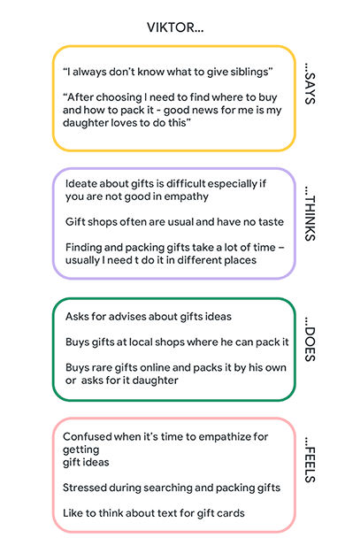
user research : pain points
ideation :
It’s hard for some people to ideate about gifts (example: cognitive disabilities, autistic ).
time :
Shopping for special gift and its packing are two separate processes which take a lot of time.
quality and money :
Gifts in special shops where offer packing and delivery are usual, impersonal and expensive.
persona : meet sarah
Sarah is a mother and a hairstylist. She likes to spend time consciously: on siblings and favorite work.
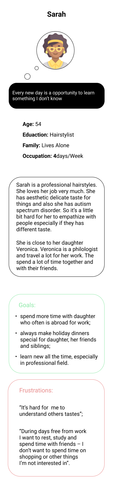
user journey map
Sarah’s journey shows future possible weaknesses: uncomfortable ideation, choosing and ordering options.
Goal: ideate, order and get the gift for sibling.
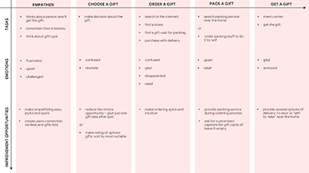
userflow
Only main path is presented, personal accounts paths with its interactions were cutted.
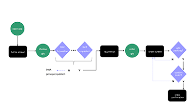
storyboards
The script: big picture
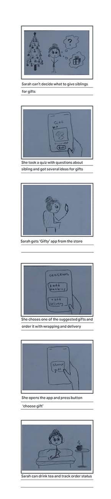
The script: close up
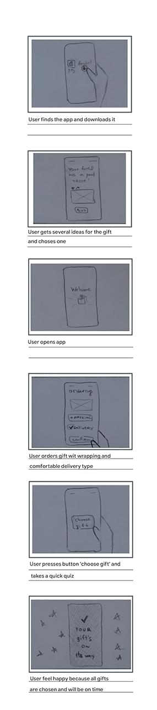
now it's time to start the design (oh, yes)
paper wireframes
For the main flow firstly were created multiple screens variations, secondly best fit parts were marked for digital impementing.
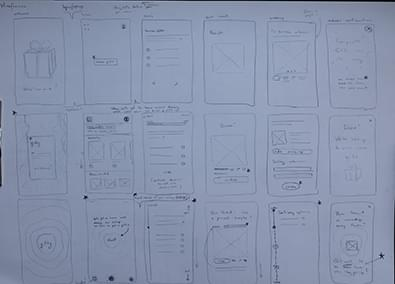
digital wireframes
In this step wireframes were created based on empathy map, userflow and storyboards.
Was made emphasis on personalization: user's asked for the gift recipient's name. Then name is using in the flow.
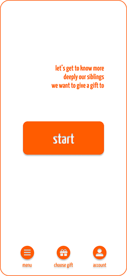home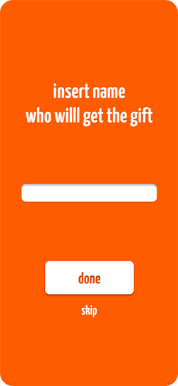quiz start
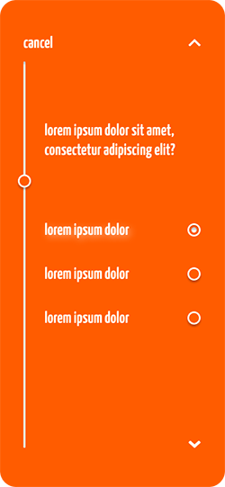quiz question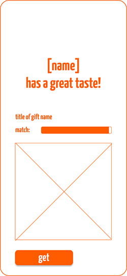quiz result
low-fidelity prototype
The prototype consists of screens: welcome, home, quiz, quiz result and ordering flow.
'Gifty' app was enjoyable for users with problem solution itself and personal approach (using receiver person name during flow).
my reflexing :
During this project, I was convinced of the following: when solving a problem, focus on the problem itself and not on the solution (a paradox). When you fixate on a suitable solution once found, flexibility and objectivity disappear.
next steps
Conduct usability study research;
Gather and analyse KPIs;
Increase quiz.
the end.
watch this project on:
thank you so much
p.s.
During designing author re-watched ‘Iron Man’(2008). It influenced the choice of the main hero for mockup. What can I say? Vinyl player, glasses and Feynman’s lectures books just apperared in my head. I had no way back.) Do you have more ideas about perfect gifts for him?))
p.p.s.
P.P.S. Ahem... this idea has one personal reason: one of the author’s dearest people has an Asperger’s so sometimes they have really hard times with empathizing* - they were so exciting with this app idea ;)
*I am not saying by this description that all people with Asperger's syndrome have difficulty with empathy - it depends on many factors.